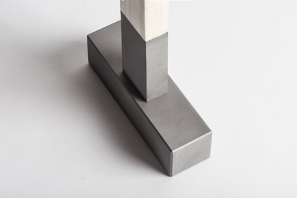
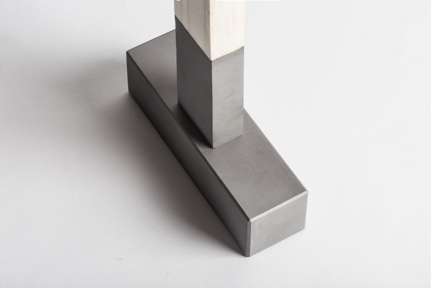

This rather philosophical project was based on studying the origin and fluctuations in the values of products during their lifetime, in order to understand how a designer can control and influence the value of things.
Material change
It was through some iterative experimentation that the project could find its final embodiment in the form of masonry tools. Every tool tells a personal story. A story of learning to make. Learning to make was selected as a source of events that transform the object and generate memories to reflect upon.
It was through some iterative experimentation that the project could find its final embodiment in the form of masonry tools. Every tool tells a personal story. A story of learning to make. Learning to make was selected as a source of events that transform the object and generate memories to reflect upon.
The goal
In order to innovate or just to create long-lasting relationships and products, a designer needs to understand the very essence of the product’s meaning and value.
In the foundation of the project lies the academic research on the origins of the material values. It was established that value forms from continuous interaction with the product, a sequence of positive or negative emotions from every use.
In order to innovate or just to create long-lasting relationships and products, a designer needs to understand the very essence of the product’s meaning and value.
In the foundation of the project lies the academic research on the origins of the material values. It was established that value forms from continuous interaction with the product, a sequence of positive or negative emotions from every use.
The artefact of personal identity
The choice of tools as a typology is based on the fact that tool is one of the most fundamental objects of the mankind, and therefore, the most recognizable and familiar to people. The choice of sculpture as a discipline comes from an enormous amount of time and patience to master it.
The choice of tools as a typology is based on the fact that tool is one of the most fundamental objects of the mankind, and therefore, the most recognizable and familiar to people. The choice of sculpture as a discipline comes from an enormous amount of time and patience to master it.
The medium for preserving value
In order to capture and reflect the fluctuations of value, much attention was paid to the ability of materials to change over time, both structurally and visually.
Balsa and fine sandblasted steel aim to capture every moment of the personal learning process. As a painting that originates from a blank canvas, tools would eventually become a reflection of the sculptor’s identity.
In order to capture and reflect the fluctuations of value, much attention was paid to the ability of materials to change over time, both structurally and visually.
Balsa and fine sandblasted steel aim to capture every moment of the personal learning process. As a painting that originates from a blank canvas, tools would eventually become a reflection of the sculptor’s identity.
 
